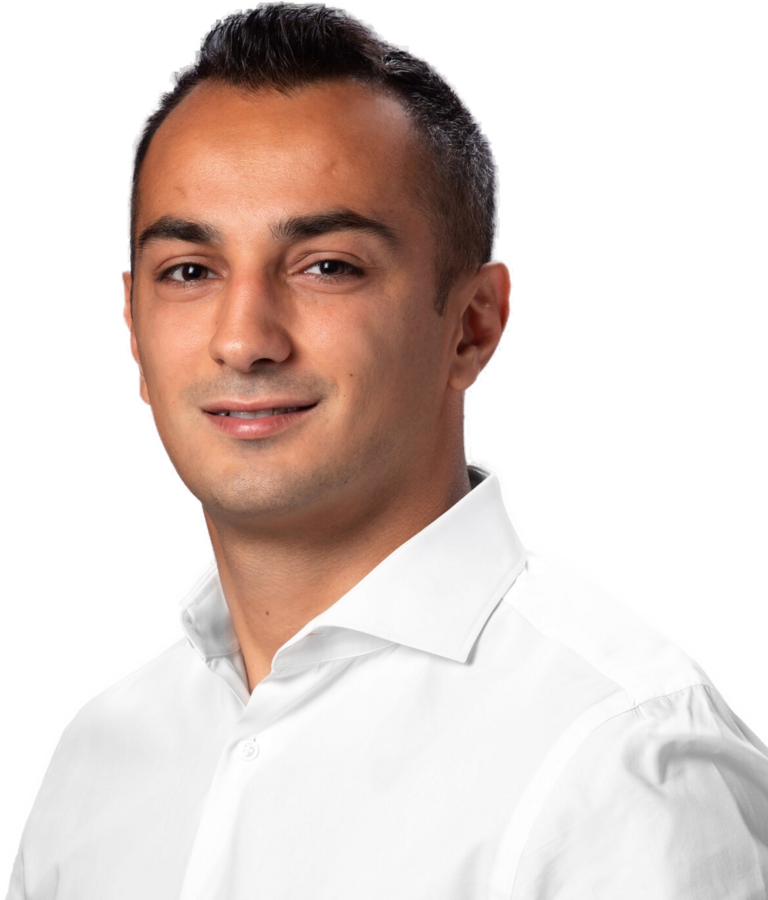

Research Scientist
About Me
I'm a scientist focused on research and developing machine learning and numerical modeling methods to solve complex problems across the sciences.
Experience
Years of research & development
Research Mentorship
High school students guided from first research question to first publication
Skills
Research Topics
Student research & papers I've guided span:
Citations
182 since 2020
h-index
6 since 2020
i10-index
4 since 2020
Source: Google Scholar profile ↗
Peer-reviewed papers I mentored from first research question to publication, in the National High School Journal of Science (NHSJS) and the Journal of High School Science (JHSS). Filter by research domain.
No papers in this category.
Abdulla was a joy to work under, he was always helpful and clear. I learned a lot through that experience and would recommend to others.
Abdulla was an exceptional mentor with immense patience and lots of practical knowledge to share. We spent a great deal of time exploring potential research directions, and throughout his mentorship I learned how to think critically about ML research — not just how to build models, but how to formulate meaningful research questions, interpret model behavior and results.
Working with Abdulla was a fantastic experience. After each meeting, he provided clear, actionable next steps along with the necessary resources to help me make steady progress on my project. I can confidently say that my mentorship with Abdulla was what helped me get my freshman-year internship.
I had a wonderful experience working with Abdulla. I knew nothing about ML going into our search, and he guided me through the process patiently while also letting me experiment independently. I can't wait to continue exploring ML at Dartmouth College.
Mr. Kerimov was my mentor and co-author of a research paper that investigated the effects of tweets on stock returns. His guidance during the project was exceptional, and he made the process of building ML models, and documenting our findings, incredibly easy to understand. His mentorship was incredibly valuable, and we produced a quality paper that was published in the NHSJS that also fostered my interest in AI.
Abdulla didn't just mentor me through the AI mentorship program — he transformed how I think about research. Under his guidance, I co-authored two papers. He has a rare ability to combine deep technical expertise with genuine investment in his students' growth, and the research instincts I built under him are directly shaping my path to NYU. If you want a mentor who will push you to do work you are genuinely proud of, Abdulla is that mentor.
Ph.D. in Earth Sciences
Computational physics — numerical modeling of pore-scale physics.
▸ View selected publicationsSelected Publications · Google Scholar
Digital rock advances from a material point method approach for simulation of frame moduli and a sedimentary petrology-inspired method for creation of synthetic samples 2024 Method and Apparatus for Petrophysical Classification, Characterization, and Uncertainty Estimation 2024 Systems and methods for estimating mechanical properties of rocks using grain contact models 2021 Estimating dry rock frame moduli of high-resolution 3D digital rock images using the contact-mechanics-based effective medium approach 2020 Particula: A simulator tool for computational rock physics of granular media 2019 Static and dynamic effective moduli of elastic-perfectly plastic granular aggregates under normal compression 2019 Rock compressibility from microcomputed tomography images: Controls on digital rock simulations 2019 The Influence of Convex Particles' Irregular Shape and Varying Size on Porosity, Permeability, and Elastic Bulk Modulus of Granular Porous Media 2018 Mechanical trapping of particles in granular media 2018 Scale and Boundary Effects on the Effective Elastic Properties of 2-D and 3-D Non-REV Heterogeneous Porous Media 2018 The impact of grain-scale changes in microstructure geometry on effective mechanical and transport properties of granular porous media (Ph.D. dissertation) 2018 Digital rocks with irregularly shaped grains: A simulator tool for computational rock physics 2018M.S. in Engineering
Experimental physics — laboratory measurements and analysis of pore-scale physics.
Applied Scientist, Subsurface R&D
Computational Scientist, 3D Digital Rocks Images
Research Mentor & Instructor